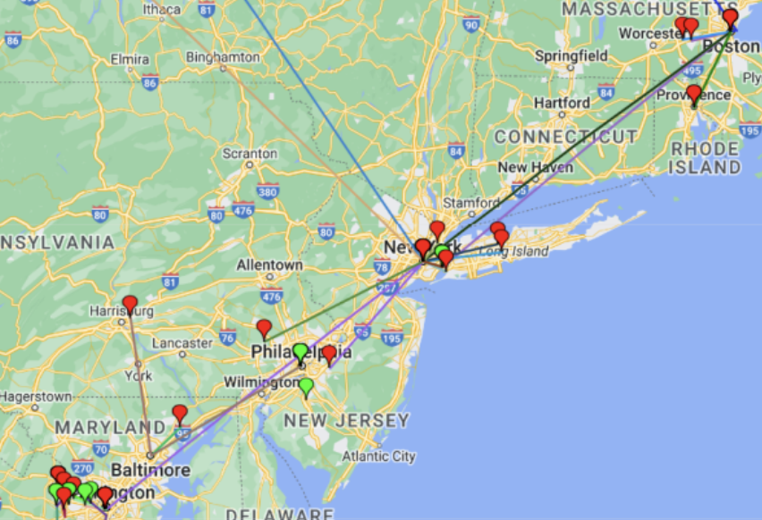
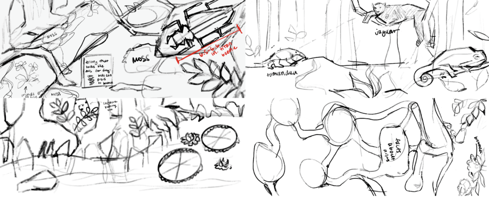
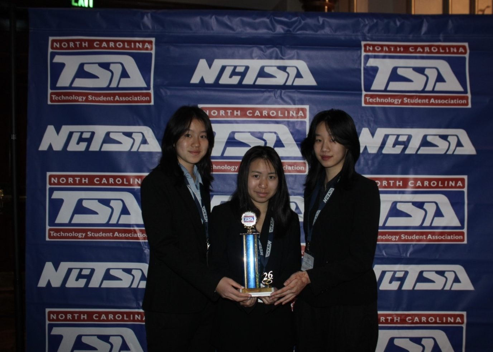

Incoming computer science student at MIT. I enjoy building software, exploring AI, and using technology to explore questions in the humanities and arts. I also like to create art myself.
Chapel Hill, NC → Cambridge, MA, Fall 2026
fig. 1 — about
A Researcher, Artist, and Student
I'm a recent graduate of the North Carolina School of Science and Mathematics, and I'll be studying computer science at MIT this fall. Most of my work in high school centered around research rather than building apps or websites, so this site is a bit of a departure, and my first project of its kind.
Outside of computer science, I spend a lot of time making art. I draw, paint, crochet, and play both piano and guitar. For me, those creative interests have never been separate from my technical ones; in fact, they inspired the research project that has defined much of my work over the past year.
People can look at a painting and immediately sense whether it feels balanced. Computers can't do that without help — they need an explicit, rule-based way to evaluate an image. CANVAS (Compositional Analysis of Visual Art Structure) is my attempt at building that rule-based bridge.
The project centers on a technique called steelyard composition, where a large, eye-catching element on one side of a painting is balanced by several smaller elements on the other — the visual equivalent of a balance scale:
fig. 2.1 — steelyard composition: one large form balanced by several smaller counterweights
I hand-labeled a large public dataset of Impressionist landscape paintings for steelyard composition and related techniques, then used those labels to train a model. I paired that with Grounding DINO, an existing object-recognition tool, so the system could locate the visual elements it needed to weigh against each other. Together, this let CANVAS identify steelyard composition directly in paintings — a small step toward machines that read art the way a trained eye does.
This work was selected as a Top 40 Finalist project at the 2026 Regeneron Science Talent Search.
CANVAS is the project I've spent the most time on, but it's not the only one. This section is where I'll add new work as I build it!
fig. 3.1
MaraMap
An interactive tool for visualizing Internet topology from user-submitted traceroute data, built with the Google Maps API. It plots routers and their connections geographically, with clickable nodes showing IP, latency, and routing details. I used it in a case study tracing how AWS CloudFront routes client traffic to edge servers, built with researchers at Duke University.
IEEE ICNP 2023 — Demo PaperDuke University

fig. 3.2
Into the Amazon
A children's storybook illustrating the different species that live in each layer of the Amazon rainforest, illustrated digitally in Procreate. Placed 9th at TSA Nationals.
TSA Nationals — 9th PlaceProcreate


fig. 3.3
Next project
This spot's open for whatever I build next.
fig. 4 — beyond the research
Everything else I make time for
Girls Who Code
Co-president of my school's chapter, where I taught weekly Python lessons to middle school girls across North Carolina.
Blue Mirror
Editor-in-chief of my school's literary arts magazine, designed with InDesign and Photoshop.
Visual art
A lifelong passion spanning many mediums. Recipient of Scholastic Gold & Silver Keys, a portfolio Honorable Mention, and two-time publication in Celebrating Art.
Music
Pianist of 10 years, and self-taught guitar player.